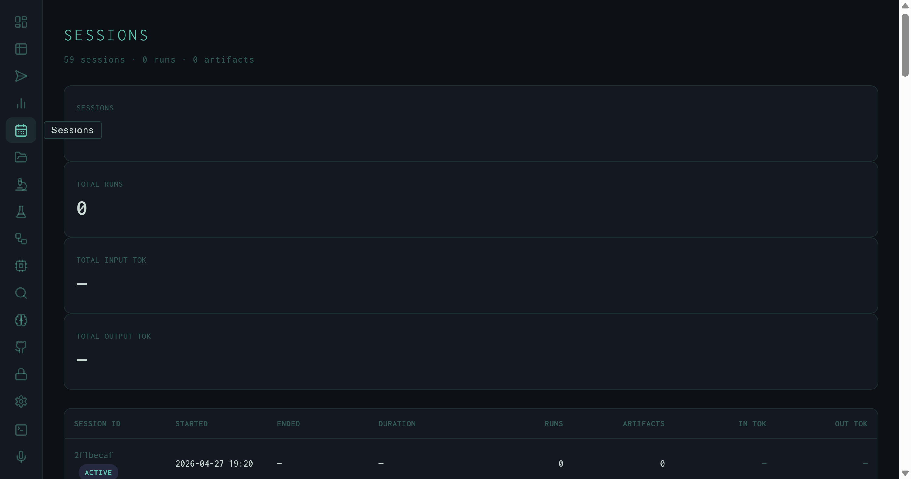
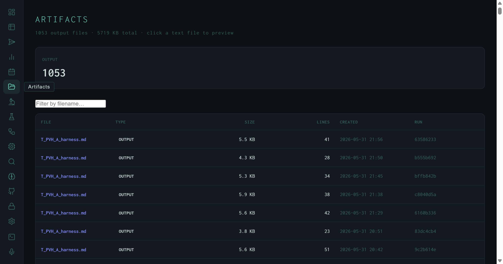

Sessions and Artifacts: The Harness Output Registry
59 CLI sessions with per-session run and token accounting, and 1,053 output files filterable by name and previewable inline — the two views that close the loop between execution and output.
Every time you launch the harness REPL or run a task from the CLI, the logger writes a session start record to data/sessions.jsonl. Every time a run produces a Markdown file, JSON export, or other output, the path is registered in data/artifacts.jsonl. The Sessions and Artifacts views surface these two logs as readable tables — one for understanding how work was grouped over time, the other for finding and previewing the outputs themselves.
Sessions

Sessions view: 59 sessions logged since April 27, 2026. The first row carries an ACTIVE badge — the current running REPL session. Token columns show em-dashes because this session hasn't completed any metered runs yet.
A session maps to a single harness process invocation — one REPL start, or one oh --serve daemon run. The view shows 59 sessions accumulated since April 27, 2026. The four KPI cards at the top aggregate across all sessions: total session count, total runs (from sessions that logged run completions), and total input/output tokens. Per-row columns:
YYYY-MM-DD HH:MM). ENDED is an em-dash for the active session.Xm Ys (or just Xs for sub-minute sessions). Computed from ended_at − started_at; em-dash for the active session.Xk or X.XM. Em-dash when no metered runs have completed.The Sessions view is useful for understanding how the harness was used over time — identifying heavy-use days, estimating token burn per working session, or finding the session that produced a particular artifact when you know roughly when it was created.
Artifacts

Artifacts view: 1,053 output files, all type OUTPUT, totalling 5,718 KB. The T_PVM_A_harness.md naming pattern identifies these as autoresearch experiment outputs — one file per scored synthesis run.
The Artifacts view lists every file the harness has registered as an output — research reports, JSON exports, slides, transcripts, knowledge graphs. The current registry holds 1,053 files, all of type output, totalling 5,718 KB. A KPI row at the top breaks down counts by artifact type; a filename filter input narrows the table in real time.
Each row in the table shows:
output. Future types include trace, draft, report.— for binary files.Clicking a row for any text-format file (.md, .txt, .py, .json, .csv, .html, .js, .ts, .yaml, .toml) expands an inline preview row. Markdown files render through MdView — formatted headers, lists, and code blocks. All other text types render as a plain <pre> block with word-wrap. If the file exceeds the preview size limit, an amber "preview truncated" warning shows the full file size.
The T_PVM_A_harness.md naming pattern in the screenshot encodes the autoresearch experiment state at the time the run executed: T = task type prefix, PVM = producer/version/model identifiers, A = experiment ID. Filtering to this pattern instantly surfaces all synthesis outputs from the autoresearch loop.
Filter by filename
The filter input does a case-insensitive substring match on the basename. Type .json to see all JSON exports, or a date fragment like 2026-05-31 if files are date-stamped.
Inline preview
Markdown preview renders fully — tables, code blocks, headers — so you can read research outputs without leaving the dashboard or opening a file manager. The preview is scrollable up to 420px before overflowing.
Run cross-reference
The truncated RUN ID in the last column is the same ID shown in the Runs view. Copy it and paste into the Runs view search box to pull up the full pipeline trace for any artifact.
Session linkage
Artifacts are registered by logger.py at the point a task writes its output. The session ID in the run record ties each artifact back to the Sessions view entry for the REPL invocation that produced it.